Every spec, package name, topic name, and command from Section 11.2 onward is taken directly from AgileX's official LIMO ROS 2 Humble manual, and every screenshot you'll see in this session is a real image from that manual — not a recreation. Sections 11.1, 11.5, 11.8–11.10 carry forward this course's own bring-up/safety/testing discipline, which layers on top of (and doesn't contradict) AgileX's documentation. LIMO ships in more than one hardware tier; this session follows the exact configuration AgileX's own ROS 2 Humble manual documents — an Intel NUC11 onboard computer, an EAI T-mini Pro LiDAR, and an ORBBEC Dabai depth camera — and commits to those real numbers throughout without further hedging, because this is now an authoritative source, not an estimate.
For the last ten lectures, "the robot" has meant a URDF description spinning inside Gazebo's physics
engine. Every command you sent to /cmd_vel was executed by a perfect, noiseless simulated
actuator, every sensor reading came back exactly as the physics engine computed it, and nothing ever
overheated, sagged, slipped, or failed to respond. That was the right way to learn navigation, TF, and
perception without needing a robot on the desk in front of you — but it also means you have never actually
had to answer questions like: what happens when the battery gets low mid-mission? What happens when a wheel
is physically off the ground and you send it a velocity command? What happens when the LiDAR mount is
2 cm off from what the URDF claims? Or, new to this session: what actually changes, physically and
electrically, when you swap LIMO from four-wheel differential mode to Ackermann mode?
This session is where the course crosses that line for good. Everything from here forward assumes you have hands on a physical AgileX LIMO. We are going to open up what's actually inside and around the chassis, learn to read its hardware health from ROS 2 topics, understand the electronics and mechanics well enough to reason about failures instead of just guessing, and build the testing discipline that keeps you — and the people standing near the robot — safe. Then, once the hardware is trusted, we drive it: real SLAM, real navigation, real vision demos.
Simulation is a deliberately simplified model of reality, and several effects that matter enormously on real hardware are usually absent or only crudely approximated in Gazebo:
cmd_vel topic never experiences.The practical consequence: a path controller you carefully tuned in Lecture 6 against a simulated LIMO will very likely need retuning once it's driving a real one. That is expected, not a sign you did something wrong earlier in the course — it is the single most common surprise first-time hardware users run into.
Don't think of the sim-to-real gap as "simulation was wrong." Think of it as "simulation answered a different, easier question." Gazebo tells you whether your algorithm is logically correct. Real hardware tells you whether your algorithm is robust. You need both answers, in that order.
Straight from AgileX's own words: LIMO is "the world's first ROS development platform that integrates four motion modes." It's a learning platform built to adapt to a wide range of scenarios and meet real industry application requirements — suited to robot education, function research and development, and product development. Its mechanical design enables swift transitions between four-wheel differential, Ackermann, tracked, and Mecanum-wheel motion modes, and it supports multi-scenario simulation teaching and testing using professional sand tables. Equipped with an onboard NUC, an EAI T-mini Pro LiDAR, and a depth camera, LIMO performs precise autonomous positioning, SLAM mapping, route planning, autonomous obstacle avoidance, and even traffic-light recognition — all of which this session puts your hands on directly.
| Name | Quantity |
|---|---|
| LIMO high-end body (with off-road wheels ×4) | ×1 |
| Battery | ×1 |
| Charger | ×1 |
| APP_Agilex (mobile app) | ×1 |
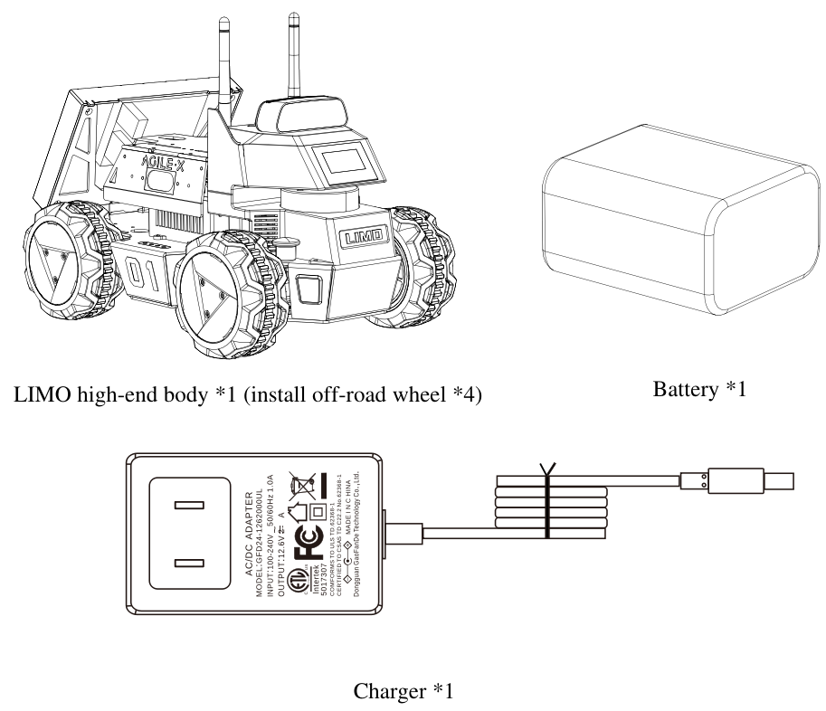
| Category | Item | Value |
|---|---|---|
| Mechanical | Overall dimension | 322 × 220 × 251 mm |
| Wheelbase | 200 mm | |
| Tread | 175 mm | |
| Dead load | 4.8 kg | |
| Load | 4 kg | |
| Minimum ground clearance | 24 mm | |
| Drive type | Hub motor (4 × 14.4 W) | |
| Performance | No-load max. speed | 1 m/s |
| Ackermann minimum turning radius | 0.4 m | |
| Work environment | -10 ~ +40 °C | |
| Max. climbing capacity | 20° | |
| System | Power interface | DC (5.5 × 2.1 mm) |
| IPC (onboard computer) | Intel NUC11 | |
| OS | Ubuntu 22.04 | |
| IMU | HI226 | |
| CPU | Intel i7-1135G7 @2.40 GHz × 8 | |
| GPU | Intel Xe Graphics | |
| Battery | 10 Ah, 12 V | |
| Working time | 2.5 h | |
| Stand-by time | 4 h | |
| Sensor | LiDAR | EAI T-mini Pro |
| Depth camera | DaBai | |
| USB-HUB | Type-C ×1, USB2.0 ×2, HDMI | |
| Front display | 1.54 inch 128×64 white OLED | |
| Rear display | 7 inch 1024×600 IPS touchscreen | |
| Control | Control mode | Mobile APP, command control |
| Mobile APP | Bluetooth, max. distance 10 m |
AgileX sells LIMO in more than one configuration, and materials you find online (including earlier drafts of this exact course) sometimes describe a lower-tier build around an NVIDIA Jetson Nano instead of this Intel NUC11. Both are real, both run ROS 2 — but the numbers in this session (CPU, GPU, battery capacity, working time, LiDAR, camera) are the ones AgileX's own ROS 2 Humble manual documents. If a number here ever disagrees with the sticker or datasheet on your specific unit, trust your unit.
Long-press the power switch to start the robot (short-press pauses the running program). Watch the battery meter and charge or swap the battery promptly once the last indicator light turns red.
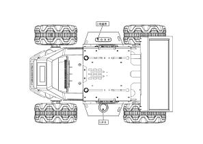
Read the current drive mode two ways at once — the front latch's position and the vehicle light's color — exactly the two-signal habit Section 11.11 builds a full lab around:
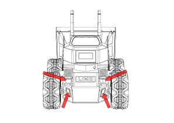
| Latch status | Light color | Current mode |
|---|---|---|
| Pushed down | Yellow | Four-wheel differential or Track |
| Pulled up | Green | Ackermann |
This is the manual's own quick-reference table for the off-road-wheel bundle it documents; Section 11.11 below covers all four modes in full, including Mecanum (Blue light), which this particular component bundle doesn't ship by default but the platform fully supports.
Under the shell, a LIMO is best understood as two computers cooperating, not one. A higher-level onboard computer runs ROS 2 and does all the "thinking" — perception, navigation, path planning, the nodes you've been writing since Lecture 1. It does not, however, directly toggle motor voltages. Instead it hands off low-level motion execution to a separate embedded motion controller dedicated to the tight, real-time job of spinning motors at a commanded velocity and reading encoders back, tens to hundreds of times per second.
This LIMO configuration's onboard computer is an Intel NUC11 running Ubuntu 22.04: an Intel i7-1135G7 @2.40 GHz, 8 threads, paired with integrated Intel Xe Graphics. That's real x86 desktop-class compute — enough headroom for the perception and navigation workloads you've been running since Lecture 7, plus the visual-SLAM and vision-module work later in this session — but it is deliberately not the processor closing the real-time motor velocity loop. The motion side runs on a separate embedded motion controller, talking to the NUC over a serial link. Exact firmware versions and serial baud rates can vary by unit — treat any specific chip revision or baud rate as illustrative of this class of hardware, and check your own robot's datasheet before relying on an exact value.
The important architectural idea, which is solid regardless of exact part numbers, is the division of labor:
| Layer | Runs | Job |
|---|---|---|
| IPC — Intel NUC11 | ROS 2 Humble, Ubuntu 22.04 | Navigation, perception, planning, the driver node that bridges ROS 2 to the motion controller |
| Embedded motion controller | Real-time firmware | Closes the motor velocity loop, reads encoders, reports faults, executes the last commanded velocity even between ROS 2 message arrivals |
| Motor drivers | Power electronics | Convert low-power control signals from the MCU into the current the drive hub motors actually need |
| Sensors (LiDAR, camera, IMU) | Their own onboard firmware | Attach directly to the NUC, typically over USB, independent of the motor control loop |
A driver node running on the NUC is the glue: it subscribes to /cmd_vel,
translates it into whatever serial protocol the motion controller expects, and on the way back translates
the controller's telemetry into ROS 2 topics you already know — /wheel/odom, and the diagnostic
topic we cover in the next section, LimoStatus.
Notice what this diagram implies: sensors like the LiDAR, camera, and IMU attach directly to the NUC over USB, bypassing the motion controller entirely. That means a sensor fault and a drive fault are, electrically, mostly independent problems — useful to know when you're debugging "the robot won't drive" versus "the robot won't see."
Running the motor velocity loop on the same general-purpose Linux computer that's also doing SLAM and path planning would risk exactly the kind of scheduling jitter that makes precise motor control unreliable — a garbage-collection pause or a heavy perception callback could delay a velocity update long enough for the robot to behave unpredictably. Splitting the "thinking" and the "moving" onto separate processors, with the fast real-time loop on dedicated embedded hardware, is a standard pattern across this whole class of wheeled research robots, not something unique to LIMO.
Everything in the previous section is invisible from ROS 2 unless something reports it. That something is
limo_msgs/msg/LimoStatus — the real diagnostic message published by the LIMO ROS 2 driver, and
the single most useful topic you have for answering "is the hardware actually okay?" without opening the
chassis. This is the exact, current message definition, straight from the driver's own limo_msgs
package:
std_msgs/Header header
uint8 vehicle_state
uint8 control_mode
float64 battery_voltage
uint16 error_code
uint8 motion_mode| Field | Type | What it tells you |
|---|---|---|
header | std_msgs/Header | Timestamp and frame — use this to confirm the status message is actually fresh, not stale |
vehicle_state | uint8 | Overall vehicle state reported by the embedded controller |
control_mode | uint8 | Whether the robot is currently under remote (RC/App) control or command (autonomous / ROS 2) control |
battery_voltage | float64 | Live pack voltage, in volts — your real-time power health signal, see Section 11.7 |
error_code | uint16 | Nonzero when the embedded controller has flagged a fault condition |
motion_mode | uint8 | Which drive module — differential, Ackermann, Mecanum, or tracked — is currently mounted and active. Central to Section 11.11. |
The same LIMO chassis physically accepts four different bolt-on drive modules: differential, Ackermann
(car-like steering), Mecanum (omnidirectional), and tracked. Swapping the drive module changes how the
robot actually moves through the world — and motion_mode in LimoStatus reflects
which module is currently mounted and electrically active. Before you launch a navigation stack that
assumes, say, differential-drive kinematics, echoing LimoStatus and checking
motion_mode is a five-second sanity check that saves you from a very confusing debugging
session. Section 11.11 puts this to the test directly.
Here's what that check looks like in practice, on a robot correctly configured for differential drive:
The exact integer meanings behind vehicle_state, control_mode, and
motion_mode are defined by AgileX's driver firmware and can vary between LIMO variants and
firmware revisions. Treat the numbers shown above as illustrative of the pattern, not as a universal
lookup table — confirm the actual enum mapping for your unit against your LIMO's manual or the driver
package's message definitions before writing logic that branches on them.
A field worth building a habit around immediately: error_code. It is tempting to only look at
it when something is visibly wrong. The better habit is to echo it as part of every bring-up (Section 11.8)
and treat any nonzero value as something to investigate before driving, not after.
To reason about LimoStatus, wheel behavior, and the odometry math from Lecture 9, you need a
working mental model of two pieces of electronics: the motor driver that actually spins the wheel, and the
encoder that reports how far it spun. LIMO drives all four wheels with hub motors — the
motor is built directly into the wheel hub, 14.4W each, four of them — rather than a single central motor
driving wheels through a differential or belt.
A DC gear motor needs far more current than a microcontroller pin can supply directly, and it needs to be able to run in either direction. An H-bridge — a small arrangement of four switching elements, or a dedicated motor-driver IC built around one — solves both problems: it sits between the low-power control signal and the high-current motor supply, and by choosing which pair of switches is closed, it can drive current through the motor in either direction.
Speed is controlled separately, using PWM (pulse-width modulation): instead of varying the voltage smoothly, the driver switches the motor supply on and off very rapidly and varies the fraction of time it's on (the duty cycle). A 70% duty cycle delivers roughly 70% of full power to the motor; the motor's own inertia smooths the rapid switching into what feels like a steady, proportional speed.
A typical H-bridge driver interface exposes something like one PWM pin (duty cycle → speed magnitude) and one or two direction pins (which way current flows → rotation sense). On LIMO, this entire layer is internal to the embedded motion controller and motor driver hardware — your ROS 2 code never touches PWM directly. Understanding it matters anyway, because it explains real symptoms you'll see on hardware: a very small commanded velocity that produces no visible motion at all (the PWM duty cycle is below the threshold needed to overcome static friction — this is the "motor deadband" mentioned in Section 11.1).
To know how far a wheel actually turned — as opposed to how far you told it to turn — the motion controller reads a quadrature encoder mounted on the motor shaft. A quadrature encoder outputs two square-wave channels, conventionally called A and B, that are offset from each other in phase. Two properties fall out of that simple setup:
It's also worth knowing the concept split between incremental and absolute
encoders. Incremental encoders (the kind used for this kind of tick-counting) only report relative motion —
they reset to an arbitrary zero at boot and only know how far they've moved since then. Absolute
encoders, by contrast, know their exact position immediately at power-on. Wheel encoders on a mobile robot
like LIMO are typically incremental — which is precisely why the ROS 2 driver has to integrate ticks over
time to build /wheel/odom, rather than simply reading a position.
This is the actual math a driver firmware/driver node uses to turn a raw encoder tick count into a physical distance, and it's the same math Lecture 9 builds full odometry on:
distance_per_tick = (2 * pi * R) / N
R = wheel radius (LIMO course value: 0.1 m)
N = encoder ticks per full wheel revolution (consult your unit's datasheet — this varies by encoder/gearbox)
Throughout this course we use LIMO's differential-drive kinematic parameters: wheelbase L = 0.3 m
(the manual's own wheelbase spec is 200 mm / 0.2 m — a good example of "hedge and check your own
unit," since this course's L=0.3m figure was set for the earlier Nav2 costmap footprint and doesn't
necessarily match every LIMO variant exactly) and wheel radius R = 0.1 m. N,
the ticks-per-revolution figure, is a property of the specific encoder and gearbox fitted to your unit —
hedge it, check your datasheet, and don't assume a number you saw quoted somewhere online applies to your
exact robot.
| Symbol | Meaning | Course value |
|---|---|---|
| L | Wheelbase (distance between left/right wheel contact points) | 0.3 m (manual spec: 0.2 m — verify your unit) |
| R | Wheel radius | 0.1 m |
| N | Encoder ticks per wheel revolution | Check your unit's datasheet |
| Footprint | Nav2 costmap rectangle used earlier in this course | 0.34 m × 0.22 m |
| Overall dimensions | Chassis length × width × height | 322 × 220 × 251 mm (manual spec) |
Everything above has been theory and diagnostics. This section opens the actual driver package running on the robot right now — real file structure, real message types, and a genuinely good teaching moment: LIMO's own driver gives you one concrete, working example of all three of ROS 2's communication patterns side by side.
The chassis driver lives at ~/agilex_ws/src/limo_ros2/limo_base:
~/agilex_ws/src/limo_ros2/limo_base
├── CMakeLists.txt
├── include
│ └── limo_base
├── launch
│ ├── limo_base.launch.py
│ ├── open_ydlidar_launch.py
│ └── start_limo.launch.py
├── package.xml
├── scripts
│ └── tf_pub.py
└── src
├── limo_base_node.cpp
├── limo_driver.cpp
├── serial_port.cpp
└── tf_pub.cpp
Its message definitions live in a companion package, ~/agilex_ws/src/limo_ros2/limo_msgs, which
defines a message, a service, and an action — a rare chance to see the real difference between the
three side by side, on the same robot, for the same rough purpose:
| Pattern | File | When you'd use it |
|---|---|---|
| Topic (fire-and-forget pub/sub) | msg/LimoStatus.msg | Continuous streaming state — battery voltage, error code — where you just want the latest value, no reply needed |
| Service (synchronous request/response) | srv/LimoSrv.srv | A one-shot request where you need to know the outcome before continuing — "did this succeed, yes or no" |
| Action (long-running, async, cancellable, with feedback) | action/LimoAction.action | A goal that takes real time to complete and where you want progress updates along the way, not just a final result |
LimoSrv.srv — a synchronous request/response, real and current:
# LimoSrv.srv
float32 x
float32 y
float32 z
---
std_msgs/Bool success
A request carries three coordinate fields (x, y, z); the response is
a single std_msgs/Bool success. The caller creates a request, populates the coordinates, sends
it, then blocks (or awaits) until the response with success comes back — a genuinely synchronous
round-trip, unlike a topic.
LimoAction.action — long-running, asynchronous, with feedback:
# LimoAction.action
float32 x
float32 y
float32 z
---
std_msgs/Bool success
---
uint32 status
Same-shaped goal (x, y, z), but now split into three parts: a
Goal (the request), a Result (success, delivered once, at the
end), and Feedback (status, streamed repeatedly while the action executes). An
action client sends the goal, then can keep working while periodically receiving feedback, and can cancel the
goal mid-flight — none of which a plain service supports.
Start the chassis driver for real:
These are the real topics that come up the moment the driver starts:
| Topic | Message type | Function |
|---|---|---|
/cmd_vel | geometry_msgs/msg/Twist | Controls the robot's speed and direction |
/imu | sensor_msgs/msg/Imu | IMU data — acceleration, angular velocity, attitude |
/limo_status | limo_msgs/msg/LimoStatus | Robot status — battery, error codes, mode (Section 11.4) |
/parameter_events | rcl_interfaces/ParameterEvent | Parameter-server events — modification, addition, deletion |
/rosout | rosgraph_msgs/Log | Node log messages |
/tf | tf2_msgs/msg/TFMessage | Coordinate-frame transforms |
/tf_static | tf2_msgs/msg/TFMessage | Static transforms — don't change over time |
/wheel/odom | nav_msgs/msg/Odometry | Wheel-odometry estimate of the robot's motion over the ground |
With limo_base.launch.py running, run ros2 topic list in another terminal and
confirm every topic in the table above is actually there. Then run ros2 topic hz /wheel/odom
and ros2 topic hz /imu — what publish rate does each report, and does that match what you'd
expect for a real-time control loop versus a diagnostics topic?
Everything downstream — motors, MCU, NUC, sensors — runs off a single rechargeable 12V, 10Ah lithium battery pack, the sixth of LIMO's six real hardware systems. A pack this size isn't just cells wired together; it includes a Battery Management System (BMS) that protects against over-discharge, over-current draw, and short-circuit conditions, and usually balances charge across individual cells. The battery has two interfaces: a yellow output connector and a black charging connector.
| Parameter | Value |
|---|---|
| Typical capacity | 10 Ah |
| Minimum rated capacity | 10 Ah |
| Nominal voltage | 11.1 V |
| Charge cut-off voltage | 12.6 V |
| Discharge cut-off voltage | 8.25 V |
| Maximum continuous discharge current | 10 A |
| Rated working time | ~2.5 h (manual spec, typical mixed workload) |
| Standby time | ~4 h |
The reason battery_voltage in LimoStatus is worth watching live, rather than
checking once at the start of a session, is that pack voltage is not static. It sags under
heavy load — when motors are accelerating hard, or the robot meets resistance (a snagged wheel, an incline,
an obstacle it's pushing against), current draw spikes and voltage measurably dips, then recovers once the
load eases. A voltage reading that looks fine at idle but sags sharply and doesn't recover under normal
driving load is an early warning sign of a pack that's aging or nearing depletion — long before it fails
outright.
LIMO's power topology is a single 10A budget shared across everything: the chassis motors, the NUC11, and every attached sensor draw from the same 10A ceiling. Cross the ceiling and the system enters overcurrent protection to protect the battery and motors — which on real hardware can look like an unexplained brownout or reset under heavy simultaneous load (hard acceleration and a GPU-heavy vision node running, for example).
| Power rail | Budget |
|---|---|
| Total (chassis + NUC11 + sensors, combined) | 10 A max — overcurrent protection trips above this |
| USB-HUB (Type-C ×1 + USB2.0 ×2 + HDMI, combined) | Shared, limited rail — don't assume it's infinite |
The USB-HUB's ports share a limited combined budget, but your LiDAR, depth camera, and any USB accessory you plug in all draw from that same rail if connected there rather than to a dedicated port. Before you assume "if it powers on, it has enough current," work out: what would you actually observe on a sensor that's being current-starved by a shared USB rail — a sensor that fails outright and doesn't appear at all, or a sensor that enumerates fine but behaves erratically under load? What test would tell you which one is happening?
Lithium packs are energy-dense and, mishandled, genuinely dangerous. AgileX's own precautions, verbatim in spirit:
"Bring-up" is the disciplined sequence of checks you run the first time you power on a piece of hardware — or any time you're not fully confident the last person to touch it left it in a known-good state. The core principle: verify each layer before trusting the layer above it. Visual and electrical checks come before power. Power and E-stop checks come before motion. Motion checks with wheels off the ground come before motion checks on the floor. Sensor sanity checks come before trusting any autonomy stack.
| # | Step | What you're checking |
|---|---|---|
| 1 | Visual inspection | No loose or disconnected connectors, no pinched or frayed cables, wheels spin freely by hand with no grinding or resistance |
| 2 | Battery charge check | Pack is charged to a safe operating level (well above the 8.25V cut-off), no visible damage or swelling |
| 3 | Verify E-stop / power switch | Physically confirm the switch actually cuts power — don't assume, test it |
| 4 | Elevate the robot on a stand | All drive wheels are off the ground and cannot propel the chassis |
| 5 | Power on, echo LimoStatus | error_code is 0, battery_voltage looks reasonable, motion_mode matches the mounted drive module |
| 6 | Test each drive motor individually, wheels elevated | Each wheel spins the correct direction at low commanded velocity, with no unusual noise |
| 7 | Sensor sanity checks | ros2 topic echo /scan, the depth camera topics, and /imu all publish plausible, non-stale data (Sections 11.12–11.14) |
| 8 | Announce and lower | Only after 1–7 pass: warn everyone nearby, then place the robot on the floor |
Step 4 through 6 are the step most people are tempted to skip once they've done bring-up a few times. Don't. The very first motion test on any newly powered, newly modified, newly mode-switched, or newly firmware-updated robot should always happen with drive wheels elevated on a stand, so an unexpected full-speed command or a reversed motor wiring can't send the robot into a person, a table edge, or off a bench. This single habit prevents the majority of "the robot lurched and I wasn't ready" incidents.
Notice that step 5 puts LimoStatus right in the middle of bring-up — it's not a diagnostic tool
you reach for only when something's already wrong, it's a routine part of every single power-on.
With your LIMO powered on and safely elevated on a stand, run through bring-up steps 1–7 above and write
down the actual values you observe: battery_voltage, error_code,
motion_mode, and whether each of /scan, the camera topics, and /imu
is publishing. Compare your motion_mode reading against which drive module is actually bolted
to the chassis in front of you.
Bring-up gets the robot to a known-good starting state. Beyond that, hardware testing on a mobile robot splits naturally into two categories, and a thorough test pass uses both.
| Type | Examples | Catches |
|---|---|---|
| Static tests | Visual/connector inspection; idle current draw check; wheels-off-ground motor spin test | Loose hardware, wiring faults, obviously broken components — before anything moves |
| Dynamic tests | Drive a measured distance and compare to /wheel/odom; sweep the LiDAR past a tape-measured object and check reported range; tilt the robot a known angle and check IMU orientation | Calibration drift, sensor accuracy problems, control loop issues that only appear in motion |
A dynamic test is only useful if you have an independent ground truth to compare against — a tape measure, a
protractor or inclinometer, a known distance marked on the floor. "The robot moved and something was
reported" isn't a test; "the robot moved 2.00 m and /wheel/odom reported 1.94 m" is. You'll run
exactly this style of test on the LiDAR, camera, and IMU in Sections 11.12–11.14.
The habit that separates careful hardware teams from unlucky ones: re-run the same checklist after any change to the physical robot, not just at the start of a project. A dropped robot, a newly added or repositioned sensor mount, a firmware update, a battery swap, or — new in this session — a drive-mode switch, are all exactly the kind of event that silently breaks a previously-working calibration or connection. Treat your bring-up and test checklist the way you'd treat a software regression suite: cheap to re-run, and far cheaper than discovering the problem mid-demo.
Mark a 2.00 m straight line on the floor with tape. Reset the odometry, drive the robot along the
line as straight as you can manage (teleop is fine), and record the distance /wheel/odom
reports at the endpoint. Repeat three times. How consistent are the three readings? How far off is the
average from 2.00 m, and in which direction (over- or under-reporting)?
The dynamic tests from Section 11.9 aren't just pass/fail checks — their gap between measured ground truth
and reported sensor value is the input to calibration. If your 2.00 m drive test in the exercise above
consistently reports, say, 1.90 m, that's not necessarily a fault; it may simply mean the effective wheel
radius or wheelbase used in the tick-to-distance math (Section 11.5) doesn't quite match reality — tire
wear, a slightly different wheel than assumed, or a mismeasured N can all shift it. The fix is
to adjust the wheel-radius/wheelbase parameters the driver uses until measured and reported distance agree,
then re-run the test to confirm.
| Symptom | Likely cause | Check |
|---|---|---|
| Odom under-reports straight-line distance | Effective wheel radius smaller than configured value | Re-measure actual wheel radius; adjust R parameter |
| Odom over/under-reports turns specifically | Wheelbase L mismatched with real wheel contact spacing | Measure real wheelbase; compare with configured value (course uses 0.3 m; manual spec is 0.2 m) |
| LiDAR range reads consistently off vs. tape measure | Sensor calibration or mounting offset | Cross-check against the EAI T-mini Pro's stated tolerance (Section 11.12); verify mount is secure |
| Perception output looks "shifted" relative to real objects | URDF sensor origin doesn't match physical mount | Extrinsic calibration — see below |
| Depth reading off vs. tape measure by more than the datasheet's stated accuracy | Mount/extrinsic drift on the DaBai camera | Section 11.13 |
Back in Lecture 4 you wrote joint origins in the URDF describing exactly where each sensor sits relative to the robot's base frame. Every TF-based calculation from Lecture 5 onward — every costmap, every localization estimate, every point cloud transform — trusts those origins completely. If the physical LiDAR or camera mount is even a few centimeters or a couple of degrees off from what the URDF claims, the error doesn't throw an exception anywhere; it just quietly corrupts every downstream calculation that depends on TF. Whenever you physically remount or replace a sensor — or switch drive modules, which changes the chassis's ride height and geometry — treat updating and re-verifying URDF origins as part of the job, not an afterthought.
Using the distance data you collected in the Section 11.9 exercise, compute the ratio of measured-to-reported distance. If the ratio is not within about 2% of 1.0, propose a corrected wheel-radius value that would bring the odometry in line with ground truth (hint: use the tick-to-distance relationship from Section 11.5 — if distance is under-reported, is the effective radius smaller or larger than the configured 0.1 m?). Then physically check whether your LiDAR's mounting position matches its URDF joint origin from Lecture 4, using a tape measure against the robot's base frame origin, and note any discrepancy.
LIMO's headline feature as a teaching platform is mechanical, not electronic: the same chassis physically accepts four different drive modules — four-wheel differential, Ackermann, tracked, and Mecanum — each changing how the robot moves through the world without changing anything about the ROS 2 software stack you've built so far (beyond, in some cases, the kinematics model a controller assumes).
| Mode | How it moves | Notable trait |
|---|---|---|
| Four-wheel differential | All four hub motors driven; steering by differential wheel speed | Can spin in place, but holding a long in-place rotation causes real tire wear — don't do it for extended periods |
| Ackermann | Car-like steering geometry; inner/outer wheels turn at slightly different angles | Cannot spin in place — minimum turning radius is 0.4 m |
| Tracked | Tracks replace the rear (or all) wheels; slide-steering like the differential mode | Best off-road performance; official climbing spec on this configuration is 20° |
| Mecanum | Angled rollers on each wheel hub allow omnidirectional motion — forward, lateral, diagonal, and rotation, independently or combined | Requires physically swapping to Mecanum wheels (rollers facing the chassis center) — not a software-only switch |
Two spring latches on the front of the chassis set differential/track vs. Ackermann geometry:
LIMO reports its current mode two ways simultaneously, and a careful workflow checks both rather than trusting either alone. AgileX's own quick-reference table for this configuration's off-road bundle covers the two states you'll use most:
| Latch state | Light color | Mode |
|---|---|---|
| Pulled up | Green | Ackermann |
| Pushed down / inserted | Yellow | Four-wheel differential or track |
| Pushed down / inserted | Blue | Mecanum (if your kit includes the wheel set) |
| — | Red flashing | Low battery / master-control alarm (not a drive mode) |
| — | Solid red | Software shut down (not a drive mode) |
With the robot powered off and safely elevated, physically switch LIMO from its current drive mode to a
different one following the latch procedure above (Mecanum only if your kit includes the wheel set —
otherwise switch between Ackermann and four-wheel differential). Power on, elevate, and run bring-up
(Section 11.8). Record: the RGB light color you observe, and the exact motion_mode integer
from ros2 topic echo /limo_status --once. Do the two signals agree with the mode you just
physically installed? If your unit's motion_mode integer mapping isn't documented anywhere
you have access to, build your own lookup table by repeating this test across every mode you can safely
test.
Changing drive modules changes the robot's turning behavior, ground clearance, and in Mecanum's case its entire motion envelope (it can now move sideways). Any navigation stack, footprint, or teleop mapping tuned for one mode should be treated as untrusted until re-verified in the new mode — with wheels elevated first, exactly as in every other bring-up.
This LIMO configuration's 2D LiDAR is an EAI T-mini Pro — a 360° 2D LiDAR from Shenzhen EAI
Technology, based on pulse ToF (time-of-flight) ranging rather than the older triangulation-based method,
the same class of sensor you've been consuming as /scan since Lecture 7, now with real
datasheet numbers to test against instead of Gazebo's idealized ray sensor.
| Parameter | Value |
|---|---|
| Ranging frequency | 4000 ranges/second |
| Scanning frequency | 6–12 Hz (6 Hz is the recommended default; needs a PWM signal connected) |
| Ranging range | 0.02–12 m (indoor, ~80% reflectivity target) |
| Scanning angle | 0–360° |
| Ranging accuracy | 20 mm, when 0.05 m < range ≤ 12 m |
| Pitch angle | 0–1.5° (0.75° typical) |
| Angle resolution | 0.54° |
Bring it up for real:
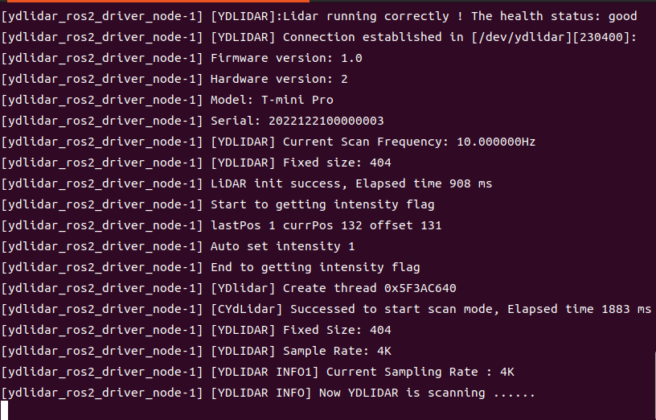
Then in a second terminal, launch RViz and watch the live scan:
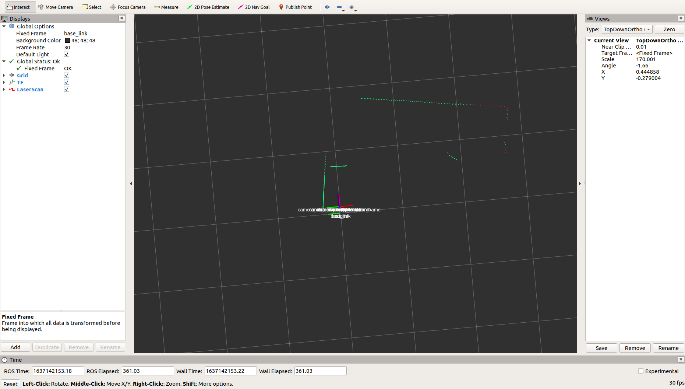
The real /scan message type is sensor_msgs/msg/LaserScan, with these fields:
header (timestamp, frame), angle_min/angle_max (scan sweep bounds),
angle_increment (angular step between readings), time_increment (time between
readings), scan_time (total time for one full scan), range_min/range_max
(valid distance bounds), ranges[] (the actual distance array), and intensities[]
(optional signal-strength array). Any node that subscribes to /scan — mapping, obstacle
detection, navigation, path planning — is reading exactly this structure.
The real accuracy spec here is a flat 20mm across the whole 0.05–12m range — simpler than some LiDARs that quote a percentage figure at longer range. Before you design a test for "is my LiDAR accurate," work out: does a flat absolute-mm tolerance make near-range or far-range testing the harder pass condition, proportionally? Where would you place your calibration target to make the test as sensitive as possible?
With the LiDAR bringup running, open ros2 topic echo /scan or view it in RViz as above. Place
a flat object (a book, a wall) at a tape-measured distance of exactly 1.00 m directly in front of the
LiDAR. Read off the corresponding range value from the scan. Is it within the datasheet's 20mm accuracy
spec? Repeat at 6.00 m.
Cartographer is Google's graph-optimization-based SLAM system. It works in two parts: Local SLAM builds and maintains a series of submaps — small grid maps — from each incoming LaserScan frame, and Global SLAM performs loop-closure detection to correct accumulated drift once a submap is finished and no new scans are inserted into it. Real bring-up:
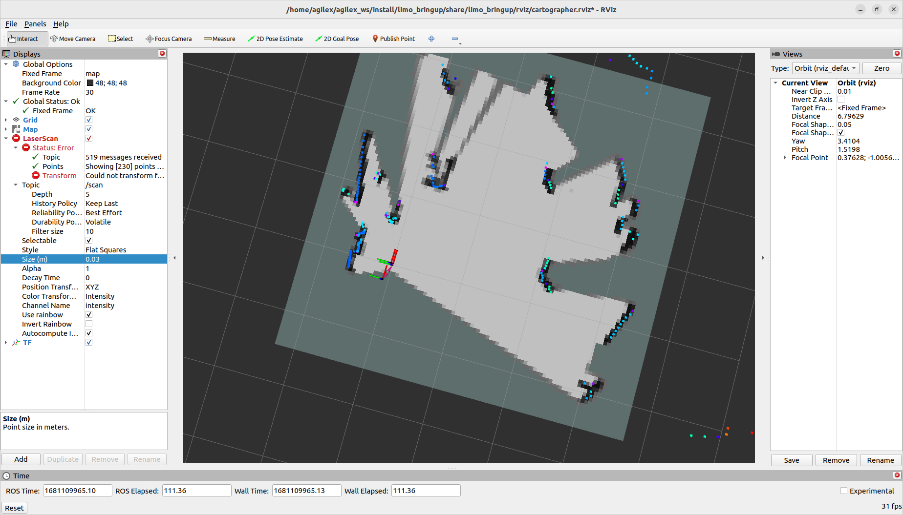
Save the finished map:
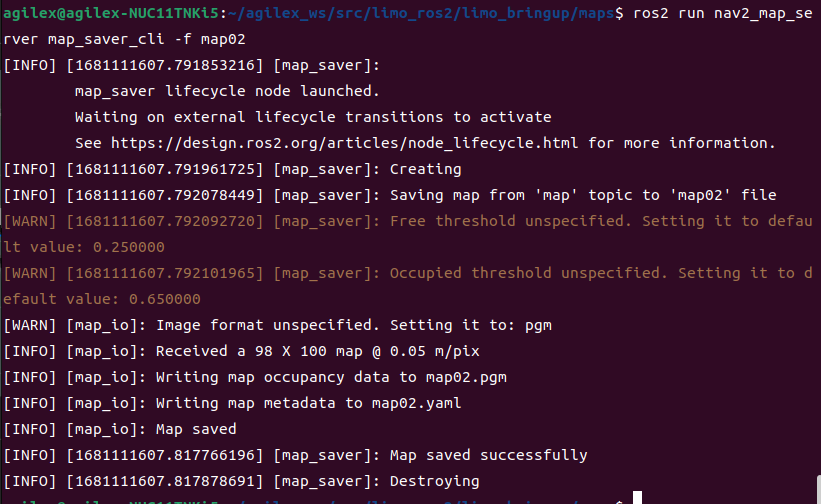
.pgm/.yaml pair, ready for Section 11.15's Nav2 lab.AgileX's own guidance is explicit: keep LIMO's speed low during mapping. Too fast, and the LiDAR simply can't keep up with the geometry changing underneath it — submaps get built from sparse, motion-blurred data, and loop closure has a harder time reconciling them. This is the same idea as Lecture 10's SLAM driving advice, now with a real sensor's real update rate behind it.
Map a real room with Cartographer, driving slowly and covering every wall at least once. Save the map. Compare it by eye against the room's actual layout — are corners square, are walls straight, does the loop close cleanly where you returned to your starting point? If not, what part of AgileX's guidance (driving speed, coverage, revisiting the start) would you change on your next attempt?
This LIMO configuration ships with an ORBBEC DaBai depth camera — a binocular structured-light 3D sensor built from a left IR camera, a right IR camera, an IR projector, and a depth processor. The projector casts a structured speckle pattern onto the scene; both IR cameras capture it from slightly different viewpoints; the depth processor triangulates the two views into a depth image.
| Parameter | Value |
|---|---|
| IR baseline (left/right camera separation) | 40 mm |
| Depth distance | 0.3–3 m |
| Power consumption | <2 W average; <5 W peak (laser on, 3 ms duration); <0.7 W standby |
| Depth map resolution | 640×400 @30fps or 320×200 @30fps |
| Color map resolution | up to 1920×1080 @30fps (also 1280×720, 640×480) |
| Accuracy | 6 mm @ 1 m (81% FOV area) |
| Depth FOV | H 67.9° × V 45.3° |
| Color FOV | H 71° × V 43.7° @1920×1080 |
| Delay | 30–45 ms |
| Data transmission | USB2.0 or above |
| Operating temperature | 10°C – 40°C |
Bring the camera up and view its RGB stream for real:
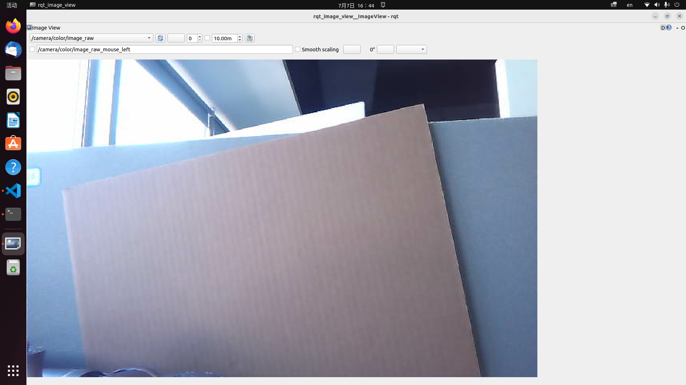
rqt_image_view — pick the correct image topic from the dropdown.With the camera bringup running, open RViz and add both an Image display (RGB) and a PointCloud2 or DepthCloud display (depth). Place an object at a tape-measured distance within the DaBai's rated 0.3–3m range and read the corresponding depth value from the point cloud or a depth-image pixel probe. How close is it to the datasheet's 6mm@1m accuracy figure?
RTAB-Map (Real-Time Appearance-Based Mapping) is a graph-based SLAM system built for a real-time/map-quality balance, using the depth camera instead of (or alongside) the LiDAR:
Real mapping bring-up (LiDAR + camera + RTAB-Map together):
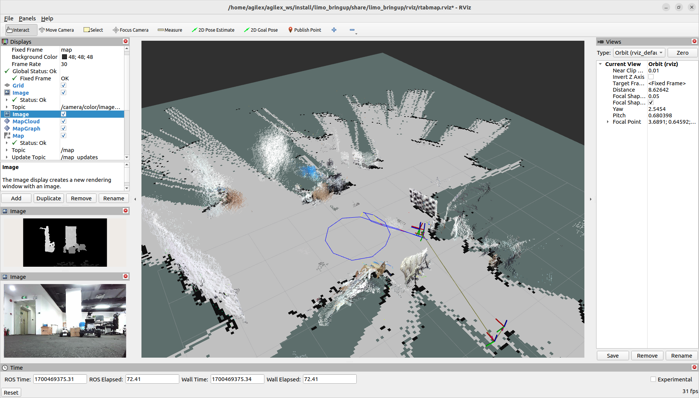
The finished map auto-saves to ~/.ros/rtabmap.db (a hidden folder — Ctrl+h in your
file browser to reveal it) the moment you terminate the program; there's no separate save step like
Cartographer's map_saver_cli.
Navigating on a saved RTAB-Map map reuses the same mapping bring-up, switched into localization mode, plus a dedicated navigation launch file:
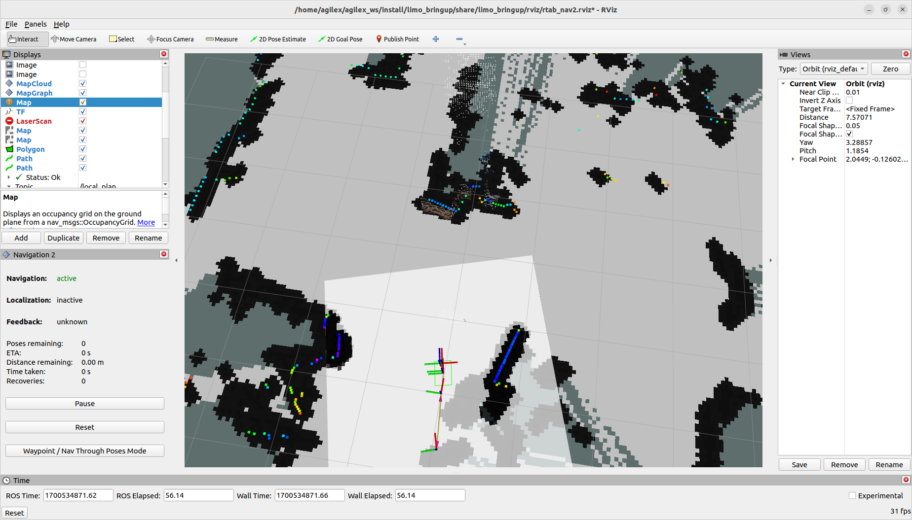
rtabmap.db map.Because RTAB-Map localizes visually rather than by matching live LiDAR geometry to a static grid, there's no initial-pose correction step to perform — set a goal directly and go:
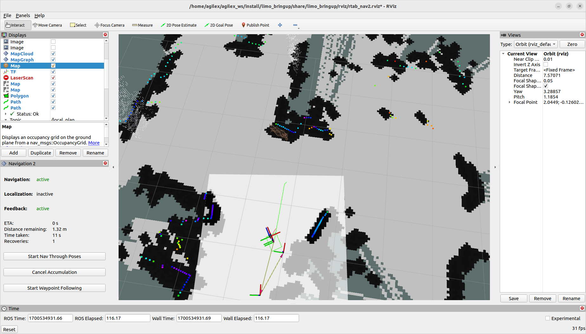
LIMO gives you two genuinely independent ways to map and navigate the same room: a LiDAR-only Cartographer + Nav2 stack, and a camera-based RTAB-Map stack. Why would AgileX build and ship both, instead of picking the one that's "better"? What does each one give you that the other structurally can't — think about what happens in a hallway with featureless white walls, and separately what happens in total darkness.
LIMO's onboard IMU is an HI226, publishing orientation, angular velocity, and linear
acceleration on /imu — the same message type you fused into the EKF back in Lecture 9. Unlike
the LiDAR and camera, the IMU has no obvious "point it at something and measure" test; instead, you verify
it against a known orientation, not a known distance.
With the robot powered on, flat, and stationary, echo /imu and record the reported
orientation (as roll/pitch/yaw, converting from quaternion if needed) as your zero baseline. Then tilt the
robot — or prop one side up on a book of known height relative to the robot's length, and compute the
resulting angle with basic trigonometry — to a known angle, hold it steady, and read the orientation
again. Does the reported tilt roughly match your known angle? Note any consistent offset — that's your
IMU's mounting-bias error, conceptually the same kind of extrinsic mismatch discussed in Section 11.10.
Low-cost MEMS IMUs like the class the HI226 belongs to have real bias and noise, and your "known angle" from a book and a tape measure has its own error too. The goal of this lab isn't lab-grade calibration — it's building the habit of never trusting a sensor you haven't personally checked against an independent ground truth at least once, the same discipline behind every other test in this session.
LIMO's real limo_visions package ships four working perception demos, each launched the same
way: bring up the camera, then run the demo node. All four are genuinely useful teaching examples of classic
OpenCV techniques wired into ROS 2 — not toy code, the actual package running on the robot.
Real code logic: subscribe to the camera image and convert it to OpenCV format → preprocess (grayscale → Gaussian blur → edge detection) → binarize into black/white → morphological operations (dilation, erosion, opening) to clean up the line → Hough transform to detect line segments → steer based on the detected line's slope and position.
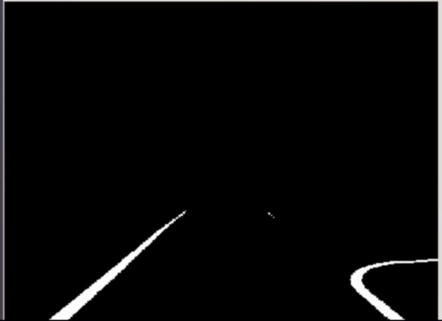
detect_line is actually steering against.
Real code logic: convert the ROS image to OpenCV via cv_bridge → define an HSV color range
for the target (blue, in the manual's own example) → inRange() to build a binary mask
→ findContours() + boundingRect() to locate the target region and draw a
bounding box → publish the target's position for downstream control/navigation nodes.
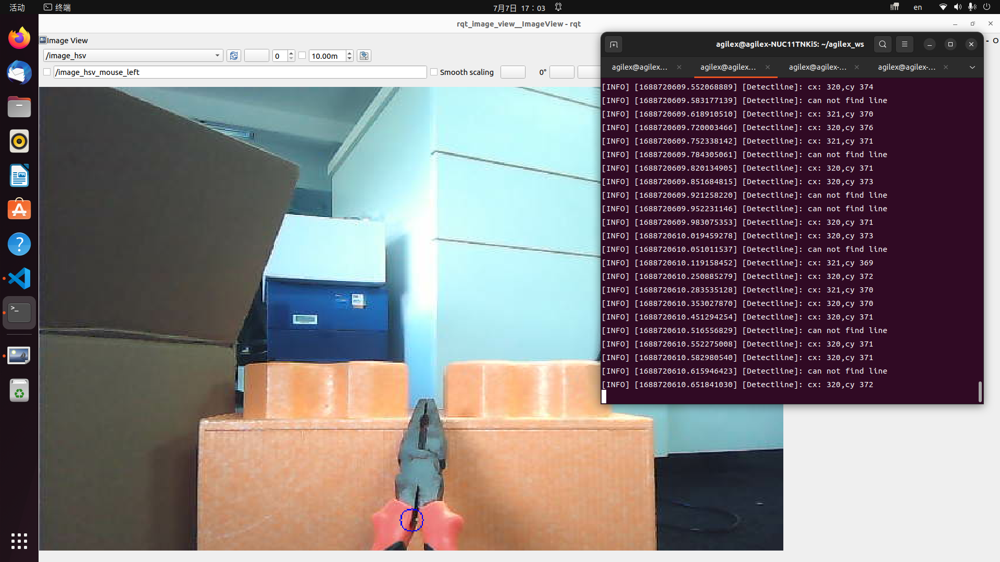
LIMO uses the real aruco_ros package (OpenCV-based, C++, with a native ROS 2 interface) for
marker detection. You can generate your own markers at
chev.me/arucogen; here's the actual
marker used in AgileX's own example:
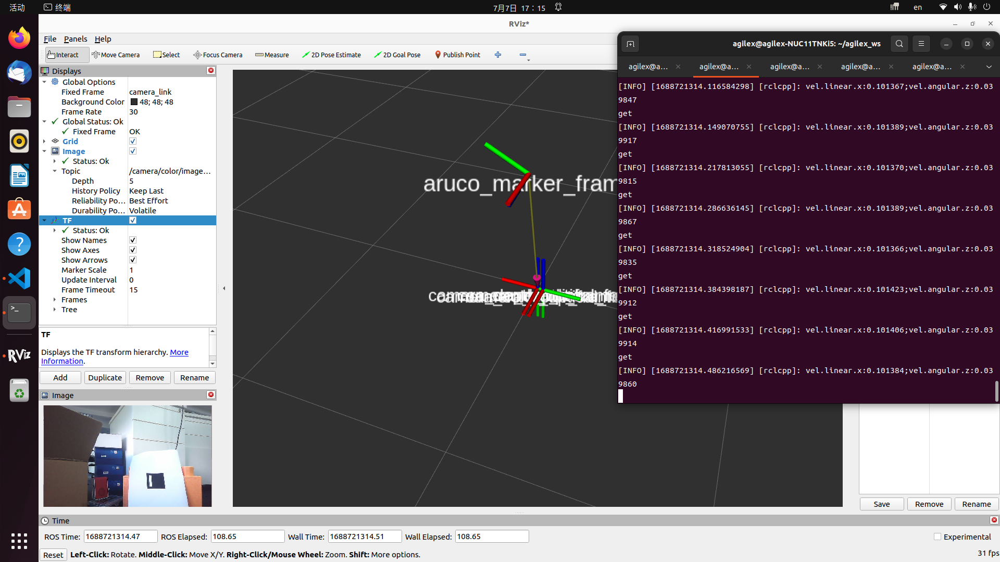
move_to_ar drives LIMO relative to the marker's detected pose.
Real code logic: initialize the node with an image subscriber and publisher → convert the image to HSV
→ define red and green color ranges and apply inRange() → morphological cleanup to
remove noise and fill holes → findContours() then minEnclosingCircle() on
each contour → classify a circle as a traffic light if its area exceeds a threshold and its center
falls in the predefined traffic-light region → draw and publish the result → repeat every frame.
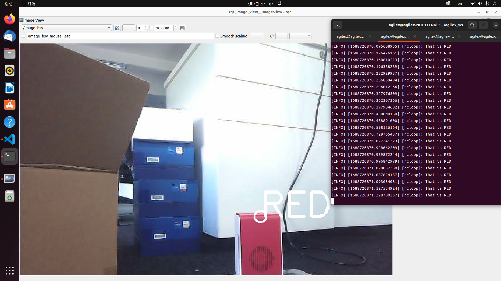
Run any two of the four vision demos above against real objects/markers you set up yourself. For each, note one condition that broke detection (poor lighting, wrong color, marker too far/angled, background clutter) and relate it back to the real code-logic steps above — which specific step in the pipeline do you think failed first?
In practice, you will almost never have a monitor plugged into LIMO — the NUC11 lives inside the chassis, and the normal workflow is remote desktop over WiFi from your own laptop. This is the real, official procedure.
Download NoMachine on your own computer from nomachine.com/download, matching your OS/architecture, and make sure LIMO and your computer are joined to the same WiFi network. The first time, you'll need a keyboard and mouse plugged directly into LIMO's USB-HUB (behind the seagull door) to select and join that network:
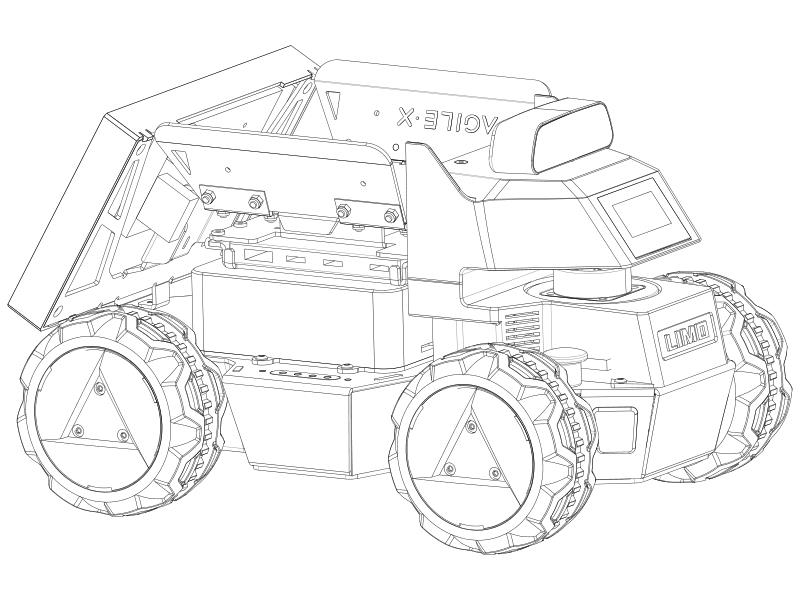
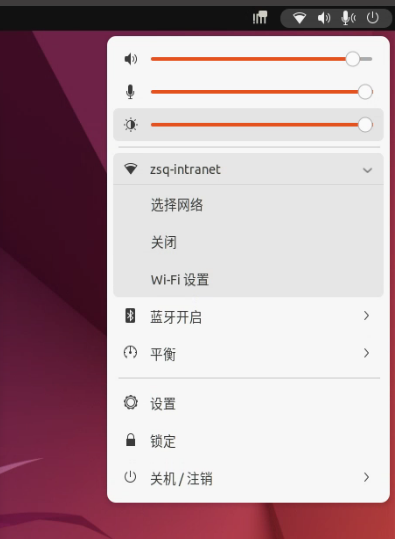
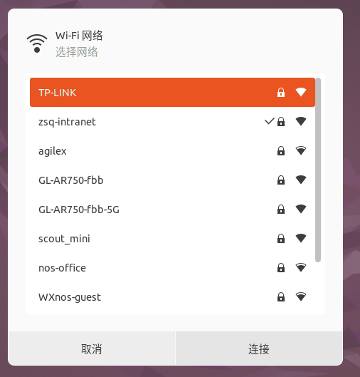
From your own computer, open NoMachine, select the LIMO connection, and confirm:
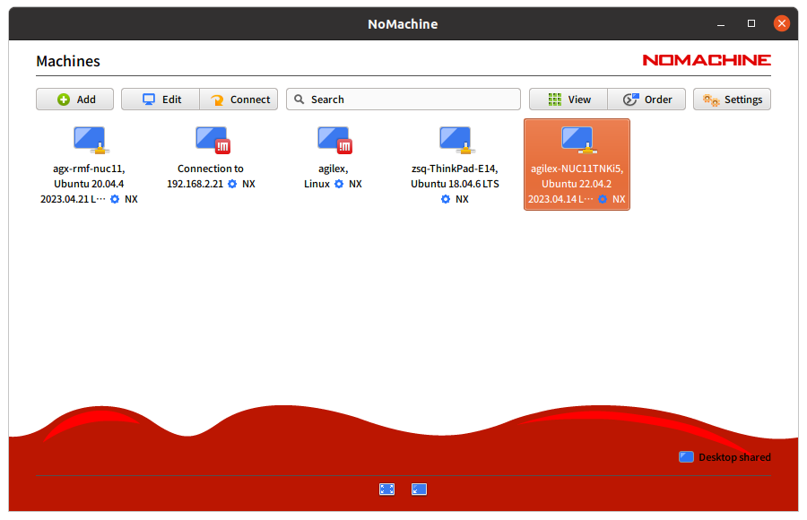
Log in with the real default credentials — username agilex, password agx — and
choose to save the password so you don't re-enter it every session:
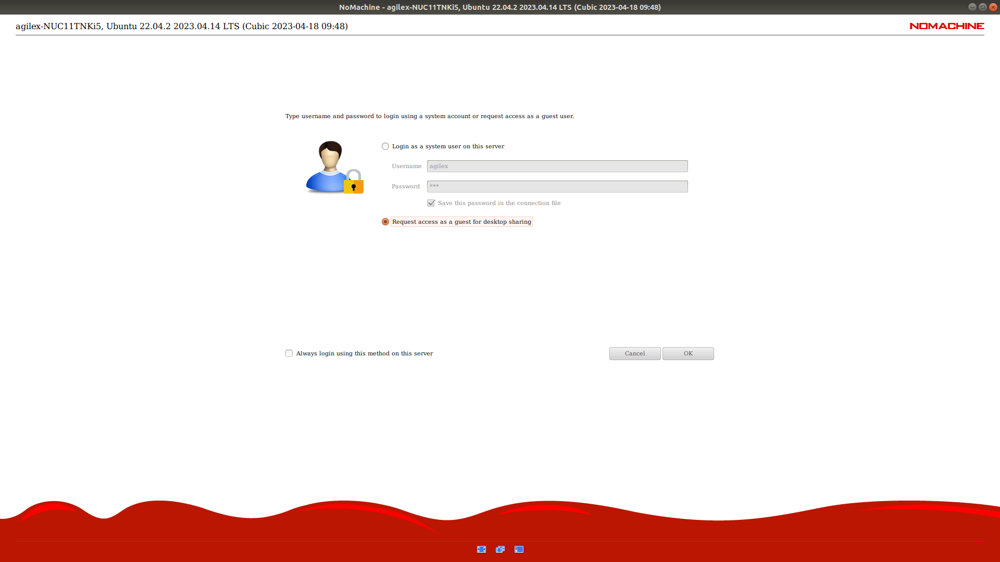
agilex, password agx.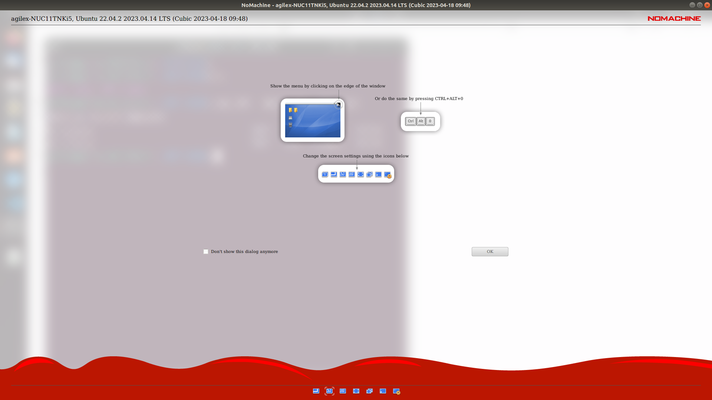
agilex / agx is a real, published default password. On any LIMO that leaves a
lab/classroom environment or joins a network you don't fully control, changing this default is a genuine
security step, not paranoia — the same class of habit as never shipping default database credentials to
production.
Set up NoMachine end to end: join LIMO to your WiFi, connect from your laptop, and run a full bring-up (Section 11.8) entirely over the remote session, with no monitor ever plugged into the robot. Note anything that felt different or laggier over remote desktop versus a direct connection — is there anything in this session you'd specifically avoid doing over a slow/high-latency remote link?
LIMO's LiDAR, depth camera, and IMU all attach directly to the NUC11 over USB, completely bypassing the embedded motion controller that owns the motors. Why does that separation matter when you're debugging "the robot won't drive" versus "the robot won't see" — and can you think of a failure that would take down BOTH at once despite this separation?
This session moved you from a purely simulated mental model of LIMO to a working, hands-on understanding of
all six of its real hardware systems — the chassis and its four physically-switchable drive
modes, the Intel NUC11 onboard computer, the EAI T-mini Pro LiDAR,
the ORBBEC DaBai depth camera, the HI226 IMU, and the 12V/10Ah
battery and power system — and then drove the whole real software stack on top of it: the real
limo_base/limo_msgs driver architecture with topic/service/action patterns you can
point to on this exact robot, Cartographer SLAM, real Nav2 navigation with initial-pose correction and
multi-point goals, RTAB-Map visual SLAM as an independent second mapping system, all four
limo_visions demos, and headless bring-up over NoMachine. Every fact, command, and image in
this session came from AgileX's own official LIMO ROS 2 Humble manual.
LimoStatus and explain what a nonzero error_code means for how I should proceed.LimoStatus (topic), LimoSrv (service), and LimoAction (action) using LIMO's own message definitions.limo_base.launch.py and what each one is for.motion_mode field.limo_visions demos and explain their real code logic in my own words.
Write a full hardware-and-software bring-up report for your LIMO, covering: (1) a chassis bring-up
checklist run (Section 11.8) with your real observed values; (2) a Cartographer map you built and saved,
with a note on its quality; (3) a real Nav2 navigation run on that map, including your initial-pose
correction and at least one multi-point route, with timing; and (4) one limo_visions demo run
against a real target, with a note on what broke it. Cite the actual commands you ran and the actual
values/behavior you observed at every step — not what you expected to see.
LIMO Hardware Everything in this session is load-bearing for the rest of the course. The encoder math and odometry topic feed directly into Lecture 9's EKF and AMCL work; the Cartographer, Nav2, and RTAB-Map work you just did for real is exactly what Lecture 10's simulated capstone rehearsed; and the bring-up/testing/calibration discipline built here — plus the real topic/service/action distinction from Section 11.6 — is the same discipline Lectures 12–14 will ask you to apply to a robot you build entirely from scratch.
aruco_ros package for marker-relative navigation or tracking.LimoStatus.error_code because the robot "seems to be driving fine anyway."motion_mode and the RGB light first.agilex/agx credentials unchanged on a robot that leaves a controlled classroom/lab network.